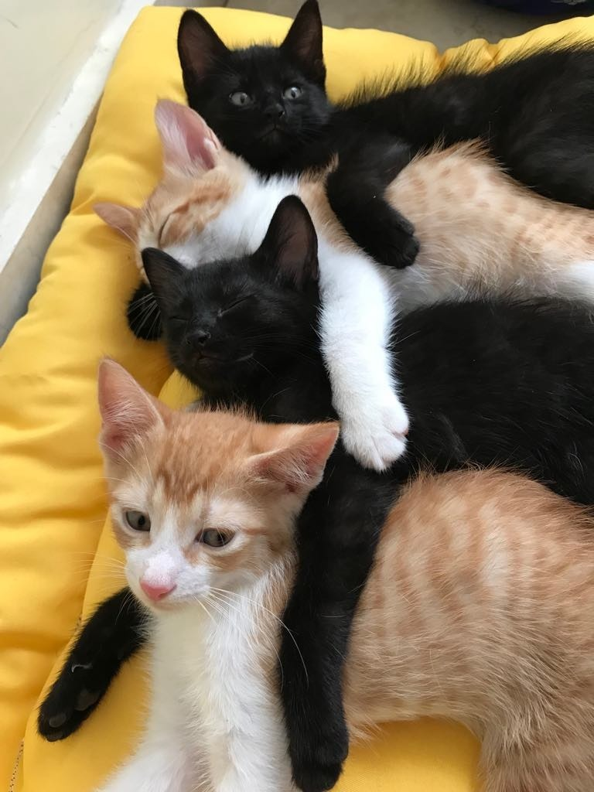

No que tange à evasão acadêmica, um conjunto diverso de investigações, no Brasil
e no mundo, tem buscado compreendê-la (FERRAO; ALMEIDA, 2018; PRESTES;
FIALHO, 2018), sendo que os estudos variam em termos de sua finalidade:
determinar as razões que levam os estudantes a abandonar o curso superior
segundo suas percepções; identificar os fatores que permitem a permanência
deles; elaborar sistemas de previsão que permitam identificar os alunos em risco
de abandono; e avaliar a eficácia das ações voltadas para a prevenção e promoção
da permanência e conclusão (ALFA-GUIA, 2013).
Retenção, do latim retentĭo, no contexto da Educação Superior, pode se referir ao tempo adicional que o estudante leva para completar a formação superior, tomando como referência o tempo de conclusão institucionalmente previsto.
Nesse sentido, considera-se retido aquele aluno que, apesar de esgotado o prazo de integralização curricular fixado, ainda não concluiu o curso, mantendo-se matriculado na instituição (ANDIFES, 1996). Partindo do entendimento de que apenas as informações estatísticas não são suficientes para compreender a complexidade desse fenômeno, alguns estudos têm sido realizados com o objetivo de identificar e analisar seus
principais fatores(APPIO et al., 2016; SILVA; RODRIGUES; BRITO, 2014).
Parte desse texto está sobreescrito. E a outra parte continua normal
Parte desse texto está superescrito. E a outra parte continua normal
Estamos estudando HTML
